| 日付 | 2022年8月13日（土） - 2022年8月15日（月） | ||
|---|---|---|---|
| 山域 | 北アルプス | ||
| メンバー | 家族（妻、長女・11歳、長男・9歳） | ||
| 山行形態 | 子連れ2泊3日キャンプ | ||
| アクセス | 車、ロープウェイ | ||
| ルート (Map) |
|
今年の夏期休暇は、当初は北アルプス縦走を計画していたが、
娘が山小屋を嫌がったため予定変更。
その後、仕事の都合で休みの日程が変更になり、
今年は8/13～白山・西穂高岳を目標に計画を立てる。
しかし、天気予報を見ると予定していた8日間は
8日連続雨予報となっており、とても計画を決行できなさそうだ。
予報はコロコロ変わって不安定だったが、8/14は晴れる可能性があり、
白山よりは近場の西穂高岳に照準を合わせ、
2泊3日に日程を切り詰めて出かけることにする。
1日目
本日は移動日で雨予報。移動だけだと時間が余り過ぎるので、松本観光を行う。
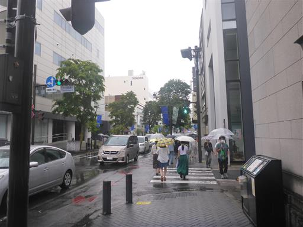
まずは松本城を訪問。
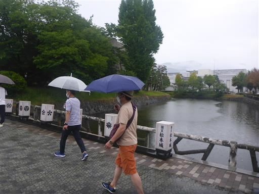
思った以上に人が多い。
松本城内に入るのは70分待ちで、入城は諦める。
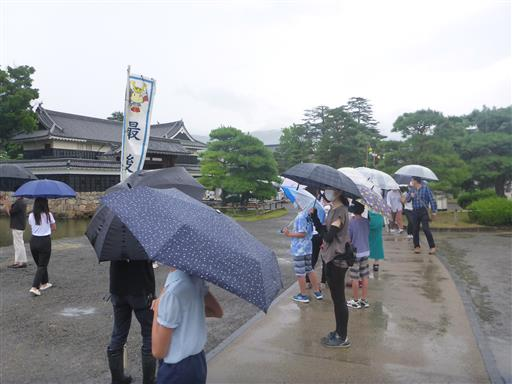
仕方がないので外から松本城を眺める。
観光ポスターなどでよく見る美しい城だ。
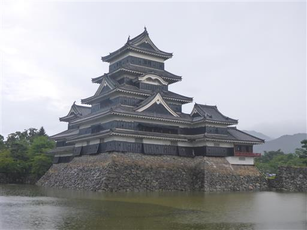
藤棚。かなりの老木だ。
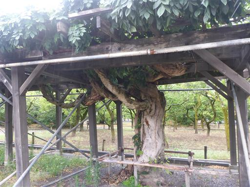
堀に赤い橋が架かっている。こちらの橋は渡ることができない。
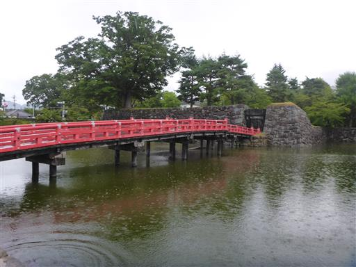
周囲の土産物屋でお土産を購入。
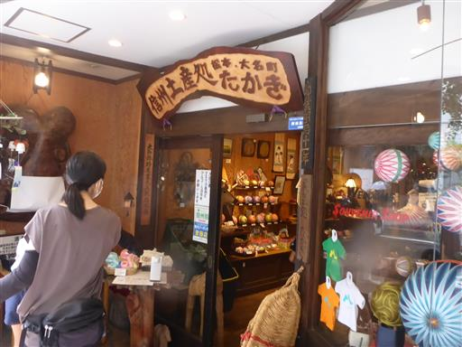
縄手通り商店街を歩く。入口にカエルの木像がある。
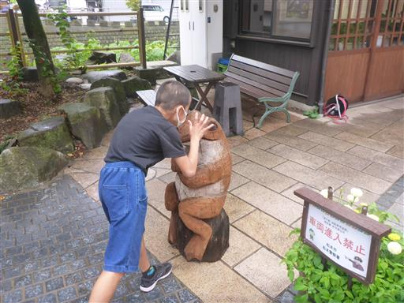
女鳥羽川に沿って商店街が続く。昼時なので昼食場所を求めて歩く。
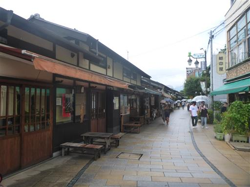
女鳥羽川を渡る。
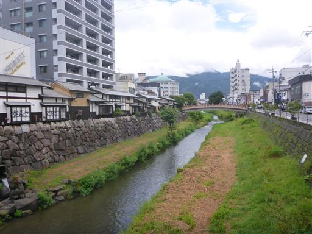
町のあちらこちらに湧水がある。湧水の街として有名なようだ。

街はレストランも大混雑。3件目のそば屋でようやく入れる。
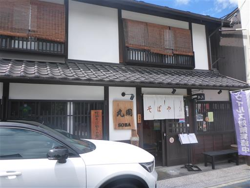
昼食後は縄手通りに戻り、タイ焼きを食べる。
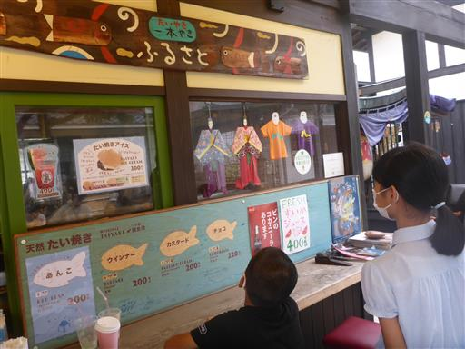
縄手通りに面する四柱神社に立ち寄る。あまり趣のない鳥居だ。
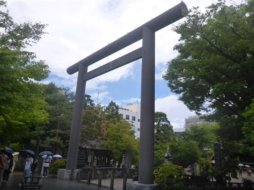
境内はそこそこ広い。
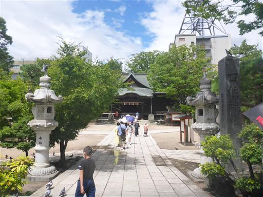
本堂。お参りするにも、観光客が多く待たされる。
松本がこんなに観光の街だとは知らなかった。
周囲にハトが多いので、お参り後に少し戯れる。

カエル大明神の巨大な像。
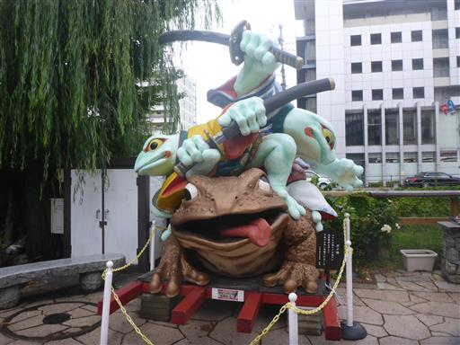
なんと、カエルの像の指と指の間に、本物のカエルが潜んでいる。
こんな偶然あるだろうか？一体どこからやってきたのか…
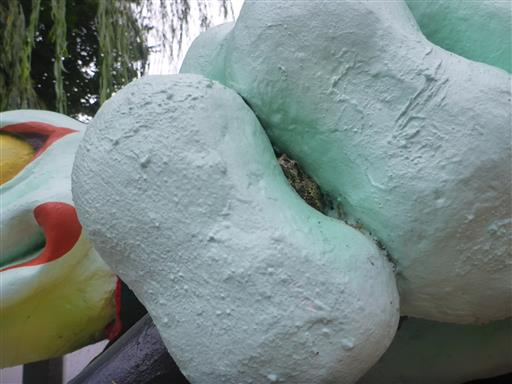
観光を終えて松本城大手門駐車場に戻ってくる。
この駐車場は車を停めるスペースが狭く、場内のすれ違いも困難で
極めて利用しにくい駐車場だった。二度と利用したくない。
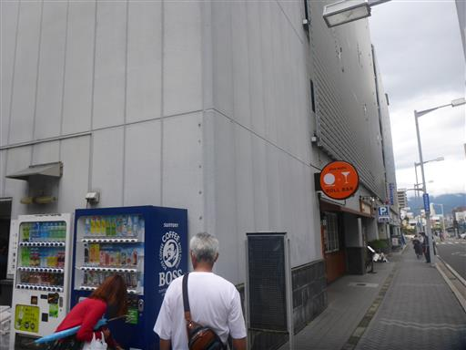
最後にALPICO PLAZAで買い物をする。
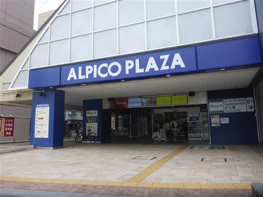
平湯キャンプ場に移動。受付を済ます。
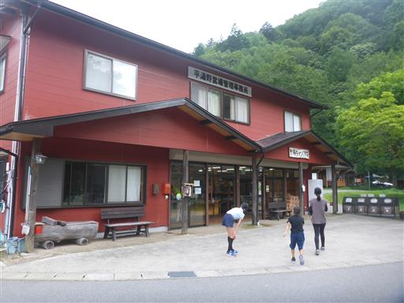
早速設営。このキャンプ場はオートキャンプだけで200張り以上の広大なキャンプ場。
直前でも予約が取れた。
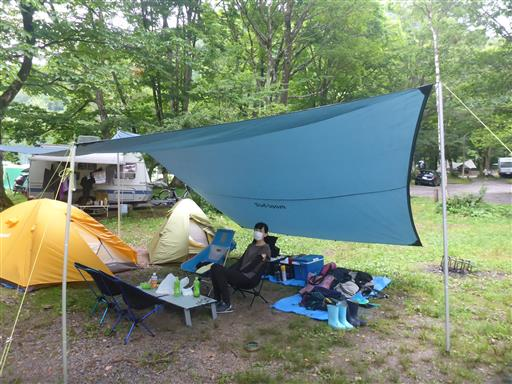
キャンプ場の中を流れる小川で軽く川遊び。
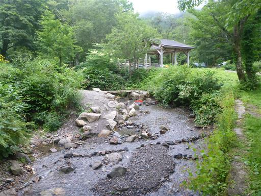
キャンプ場の側にある、ひらゆの森で日帰り入浴。
露天風呂が広く気持ちの良い風呂だ。明日に備えて早めに寝る。
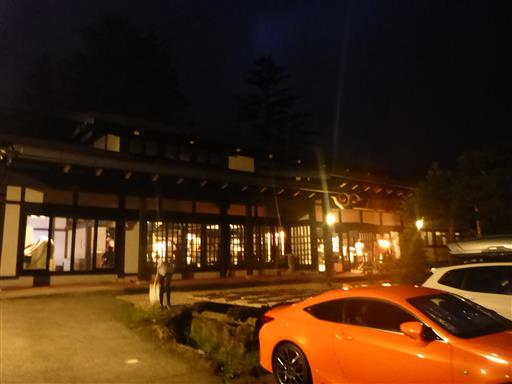